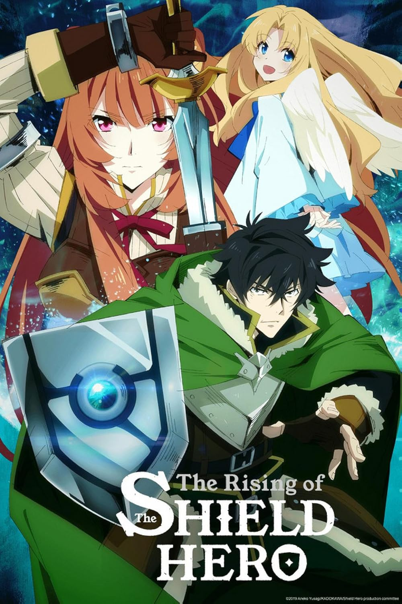
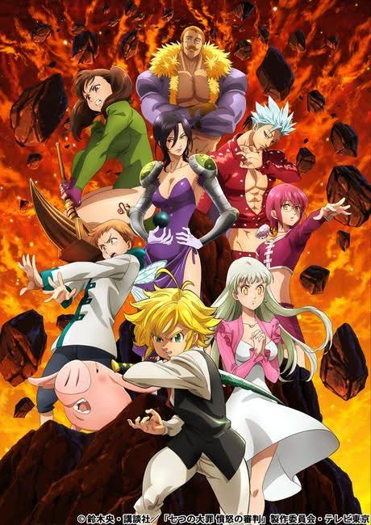
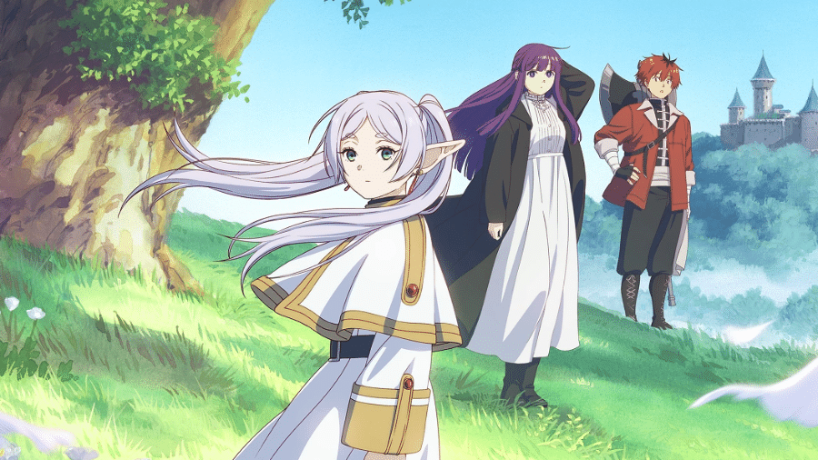
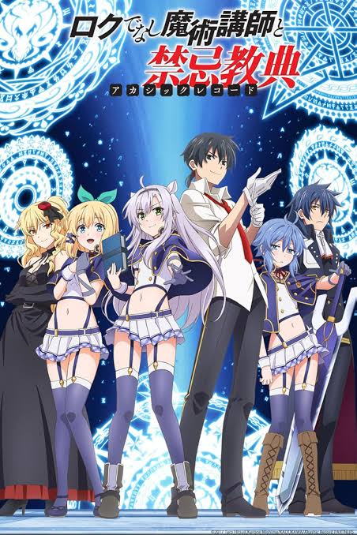

Tate no Yuusha no Nariagari

Nome original
Tate no Yuusha no Nariagari (盾の勇者の成り上がり)
Gêneros
- Isekai
- Fantasia
- Aventura
- Ação
- Drama
📖 Sinopse
Tate no Yuusha no Nariagari acompanha Naofumi Iwatani, um jovem universitário que é transportado para um reino de fantasia juntamente com outros três heróis lendários. Cada um recebe uma arma sagrada, mas Naofumi acaba sendo escolhido como o Herói do Escudo, considerado o mais fraco entre eles. Logo nos primeiros dias, ele é vítima de uma falsa acusação que destrói sua reputação e faz com que toda a população passe a desconfiar dele. Sozinho, sem aliados e tratado como um criminoso, Naofumi precisa encontrar uma maneira de sobreviver. Durante sua jornada, conhece Raphtalia e Filo, que se tornam suas maiores companheiras na luta contra as Ondas de Catástrofe, eventos que ameaçam destruir o mundo. O anime mistura batalhas, crescimento pessoal e superação, mostrando que a verdadeira força não depende apenas de poder físico, mas também de confiança, inteligência e determinação.
👥 Personagens principais
Naofumi Iwatani
O protagonista da história. Inicialmente é um jovem gentil e otimista, mas as injustiças que sofre fazem com que se torne desconfiado e frio. Mesmo assim, continua ajudando aqueles que realmente precisam e demonstra grande capacidade de liderança.
Raphtalia
Uma demi-humana resgatada por Naofumi ainda criança. Ela cresce ao seu lado e se torna uma habilidosa espadachim, além de representar a confiança e a amizade que o protagonista recupera ao longo da história.
Filo
Uma Filolial que nasce de um ovo adquirido por Naofumi. Apesar da aparência infantil, possui enorme força física e costuma trazer momentos de humor para a narrativa.
Melty Q. Melromarc
Princesa do reino de Melromarc. Diferente de muitos nobres, procura agir com justiça e desempenha um papel importante na mudança da imagem de Naofumi perante o reino.
⭐ Pontos fortes
O maior destaque de Tate no Yuusha é a evolução do protagonista. Ao contrário de muitos animes isekai, Naofumi não inicia sua jornada como um herói admirado. Pelo contrário, precisa conquistar respeito por meio de suas atitudes. Outro aspecto interessante é o desenvolvimento da relação entre os personagens. A amizade construída entre Naofumi, Raphtalia e Filo acontece de forma gradual, tornando o grupo bastante carismático. As batalhas também chamam atenção por exigirem estratégia. Como o Herói do Escudo não pode atacar diretamente, Naofumi precisa encontrar soluções criativas para vencer seus inimigos.
🎯 Curiosidades
- O anime é baseado em uma light novel escrita por Aneko Yusagi.
- A primeira temporada foi lançada em 2019.
- Raphtalia é uma das personagens femininas mais populares dos animes isekai.
- O escudo de Naofumi possui dezenas de formas diferentes, desbloqueadas conforme sua evolução.
- A obra já recebeu várias temporadas devido ao sucesso internacional.
💬 Minha opinião
Tate no Yuusha no Nariagari consegue prender a atenção desde os primeiros episódios por apresentar um protagonista diferente do padrão. Em vez de receber fama e reconhecimento imediatamente, Naofumi precisa enfrentar preconceitos e reconstruir sua vida praticamente do zero. O anime equilibra momentos de ação, drama e humor, além de transmitir mensagens sobre perseverança, confiança e amadurecimento. Outro ponto positivo é que os personagens secundários não servem apenas como apoio, mas possuem histórias e motivações próprias que enriquecem a narrativa. Mesmo apresentando alguns momentos mais lentos em determinadas temporadas, a obra continua sendo uma excelente recomendação para quem gosta de fantasia medieval e aventuras com forte desenvolvimento dos personagens.
🏆 Nota
⭐⭐⭐⭐⭐ (9,2/10)
Recomendado para quem gosta de:
- Re:ZERO
- Overlord
- Sword Art Online
- Mushoku Tensei
- That Time I Got Reincarnated as a Slime
Nanatsu no Taizai

Nome original
Nanatsu no Taizai (七つの大罪)
Gêneros
- Ação
- Fantasia
- Aventura
- Shounen
- Comédia
- Drama
📖 Sinopse
Nanatsu no Taizai é ambientado no reino fictício de Liones, onde um grupo lendário de cavaleiros conhecido como Os Sete Pecados Capitais foi acusado de conspirar contra a coroa e acabou sendo considerado traidor. Após esse acontecimento, os Cavaleiros Sagrados assumem o controle do reino, enquanto a verdadeira história permanece desconhecida pela população. Durante sua viagem, Elizabeth encontra Meliodas, o antigo capitão do grupo, que administra uma pequena taverna ambulante chamada Boar Hat. A partir desse encontro, inicia-se uma aventura repleta de batalhas, descobertas e revelações sobre o passado dos personagens. Conforme os Pecados Capitais voltam a se reunir, antigos inimigos ressurgem e novos desafios colocam em risco não apenas Liones, mas todo o continente de Britannia. Ao longo da história, o anime explora temas como amizade, perdão, sacrifício, lealdade e redenção, mostrando que cada personagem precisa enfrentar seus próprios erros e traumas para seguir em frente. Anos depois, a terceira princesa de Liones, Elizabeth, descobre que os Cavaleiros Sagrados realizaram um golpe de Estado e aprisionaram o rei. Sem alternativas, ela parte em uma longa jornada para reunir novamente os Sete Pecados Capitais, acreditando que apenas eles possuem força suficiente para libertar o reino.
👥 Personagens principais
Meliodas
Capitão dos Sete Pecados Capitais e portador do pecado da Ira do Dragão. Apesar de sua aparência jovem e comportamento descontraído, Meliodas é um dos guerreiros mais poderosos do mundo. Seu passado está profundamente ligado ao Clã dos Demônios e a um antigo conflito que influencia toda a história da série.
Elzabeth Liones
Terceira princesa do Reino de Liones. Gentil, determinada e extremamente compassiva, Elizabeth acredita que sempre existe uma forma de resolver conflitos sem recorrer à violência. Sua busca pelos Sete Pecados Capitais desencadeia toda a narrativa, e sua verdadeira origem revela-se um dos maiores mistérios da obra.
Ban
Conhecido como o Pecado da Ganância da Raposa, Ban é imortal graças à Fonte da Juventude. Seu jeito irreverente e brincalhão esconde um personagem profundamente marcado por perdas e arrependimentos. Sua amizade com Meliodas e seu amor por Elaine tornam sua trajetória uma das mais emocionantes do anime.
King
O Pecado da Preguiça do Urso e antigo Rei das Fadas. Apesar da aparência de um jovem garoto, King possui enorme poder mágico e protege seu povo com dedicação. Sua relação com Diane e o sentimento de culpa por acontecimentos do passado contribuem para o amadurecimento do personagem.
Diane
Representando o Pecado da Inveja da Serpente, Diane pertence ao Clã dos Gigantes. Sua força física impressiona qualquer adversário, mas sua personalidade demonstra sensibilidade, lealdade e grande preocupação com aqueles que ama.
Gowther
O Pecado da Luxúria da Cabra é um personagem misterioso e extremamente inteligente. Sua dificuldade em compreender emoções humanas faz com que várias situações provoquem tanto humor quanto reflexões sobre identidade e sentimentos.
Merlin
Conhecida como o Pecado da Gula do Javali, Merlin é considerada a maior maga de Britannia. Seu vasto conhecimento sobre magia e sua inteligência estratégica fazem dela uma das integrantes mais importantes do grupo.
Escanor
Portador do Pecado do Orgulho do Leão, Escanor possui uma habilidade única que faz seu poder aumentar conforme o Sol se aproxima do meio-dia. Durante esse período, transforma-se no homem mais forte do reino, enquanto à noite retorna à sua personalidade tímida e insegura.
⭐ Pontos fortes
Um dos maiores diferenciais de Nanatsu no Taizai é a construção de seus personagens. Embora cada integrante do grupo possua habilidades extraordinárias, todos carregam cicatrizes emocionais, arrependimentos e conflitos internos que tornam suas histórias mais humanas. Outro destaque é o sistema de poderes, que apresenta habilidades muito diferentes entre si. Em vez de depender apenas da força física, muitos confrontos envolvem estratégia, magia, inteligência e trabalho em equipe. As batalhas são marcadas por grande intensidade, com golpes de enorme escala e animações que, principalmente nas primeiras temporadas e no filme Prisoners of the Sky, chamaram bastante atenção dos fãs. A narrativa também desenvolve diversos clãs presentes em Britannia, como humanos, gigantes, fadas, demônios, deusas e vampiros, ampliando significativamente a riqueza do universo criado por Nakaba Suzuki. Além disso, o anime consegue equilibrar ação com momentos de humor. As interações entre Meliodas, Ban, King, Diane e Hawk tornam vários episódios leves e divertidos, sem comprometer o andamento da história.
🎯 Curiosidades
- O mangá foi criado por Nakaba Suzuki e publicado entre 2012 e 2020.
- O título faz referência aos sete pecados capitais da tradição cristã, mas os personagens representam esses pecados de forma simbólica.
- O mascote Hawk tornou-se um dos personagens mais populares da franquia graças ao seu humor constante.
- O universo da série foi expandido com filmes, especiais e continuações.
- A sequência oficial da história chama-se Four Knights of the Apocalypse, acompanhando uma nova geração de heróis.
- Cada integrante dos Sete Pecados Capitais possui um animal símbolo associado ao seu pecado.
- Britannia, cenário principal do anime, foi inspirada em antigas lendas britânicas e na mitologia do Rei Arthur.
💬 Minha opinião
Nanatsu no Taizai é um anime que conquista o público principalmente pela personalidade de seus protagonistas e pela dinâmica entre eles. Em vez de formar apenas um grupo de guerreiros poderosos, a obra apresenta personagens com passados complexos, motivações bem definidas e relações que evoluem naturalmente ao longo da história. Outro aspecto muito interessante é a maneira como o anime trabalha o conceito de redenção. Cada integrante dos Sete Pecados Capitais foi julgado por acontecimentos do passado e precisa provar, por meio de suas ações, quem realmente é. Essa ideia reforça a mensagem de que ninguém deve ser definido apenas pelos próprios erros. As primeiras temporadas conseguem equilibrar muito bem ação, humor e emoção, mantendo um ritmo envolvente. As revelações sobre Meliodas, Elizabeth e a guerra entre os diferentes clãs tornam a narrativa cada vez mais grandiosa, fazendo com que o espectador queira descobrir o que acontecerá em seguida. Embora parte da comunidade de fãs tenha criticado a qualidade da animação em algumas temporadas posteriores, especialmente durante certos combates importantes, a história permanece interessante graças ao desenvolvimento dos personagens e às inúmeras reviravoltas. Para quem aprecia aventuras medievais, magia, batalhas épicas e personagens carismáticos, Nanatsu no Taizai continua sendo uma excelente escolha e uma das obras mais conhecidas da última década.
🏆 Nota
⭐⭐⭐⭐⭐ (9,2/10)
Recomendado para quem gosta de:
- Fate/Stay Night
- Magi: The Labyrinth of Magic
- Black Clover
- Fairy Tail
- The Seven Deadly Sins: Four Knights of the Apocalypse
O anime oferece uma combinação envolvente de fantasia medieval, ação intensa e personagens memoráveis, sendo uma ótima opção para quem busca uma história repleta de aventura, amizade e desafios épicos.
Sousou no Frieren

Nome original
Sousou no Frieren (葬送のフリーレン)
Gêneros
- Fantasia
- Aventura
- Drama
- Slice of Life
- Shounen
📖 Sinopse
Sousou no Frieren apresenta uma proposta diferente da maioria dos animes de fantasia. Em vez de acompanhar a jornada para derrotar o Rei Demônio, a história começa justamente após essa grande conquista. Depois de dez anos de aventuras, o grupo de heróis formado pela maga élfica Frieren, pelo herói Himmel, pelo sacerdote Heiter e pelo guerreiro anão Eisen finalmente devolve a paz ao mundo. Para Frieren, que pertence a uma raça de vida extremamente longa, aqueles dez anos representam apenas uma pequena parte de sua existência. Enquanto seus companheiros seguem suas vidas e envelhecem naturalmente, ela continua praticamente inalterada pelo tempo. No entanto, após testemunhar a morte de Himmel décadas depois da vitória do grupo, Frieren percebe que, apesar de terem convivido por muitos anos, nunca procurou conhecer verdadeiramente as pessoas que estiveram ao seu lado. Movida por esse arrependimento, ela inicia uma nova jornada pelo mesmo mundo que ajudou a salvar. Dessa vez, porém, seu objetivo não é derrotar um grande inimigo, mas compreender melhor os sentimentos humanos, criar novas amizades e valorizar as lembranças daqueles que marcaram sua vida. Ao longo dessa caminhada, Frieren assume o papel de mentora da jovem maga Fern e posteriormente recebe a companhia do guerreiro Stark. Juntos, os três percorrem cidades, florestas e antigas ruínas, enfrentando monstros, realizando missões e encontrando pessoas cujas histórias mostram diferentes maneiras de lidar com o tempo, a perda, a saudade e a esperança. Embora possua combates muito bem elaborados, Sousou no Frieren destaca-se principalmente por sua narrativa contemplativa, mostrando que as maiores aventuras nem sempre envolvem guerras épicas, mas sim as pequenas experiências que moldam quem somos.
👥 Personagens principais
Frieren
A protagonista da história é uma maga élfica com mais de mil anos de idade. Extremamente talentosa no uso da magia, Frieren dedicou grande parte de sua vida ao estudo de feitiços antigos e ao aperfeiçoamento de suas habilidades. Inicialmente demonstra dificuldade para compreender emoções humanas devido à enorme diferença entre sua expectativa de vida e a dos demais personagens. Entretanto, conforme sua nova jornada avança, ela passa a valorizar cada encontro, cada lembrança e cada amizade construída ao longo do caminho. Sua evolução emocional é um dos aspectos mais importantes da obra.
Fern
Fern é uma jovem maga criada por Heiter após perder sua família durante a guerra contra o Rei Demônio. Inteligente, disciplinada e extremamente dedicada aos estudos, ela torna-se aprendiz de Frieren e rapidamente demonstra enorme talento para a magia. Apesar de possuir personalidade séria e responsável, Fern desenvolve uma relação quase familiar com sua mestra, equilibrando a distração de Frieren com seu senso de organização e maturidade.
Stark
Discípulo do lendário guerreiro Eisen, Stark é um espadachim habilidoso que, apesar de sua força extraordinária, frequentemente demonstra insegurança diante de grandes desafios. Seu jeito tímido e bem-humorado cria diversos momentos divertidos durante a viagem, enquanto seu crescimento como guerreiro mostra que coragem não significa ausência de medo, mas a capacidade de enfrentá-lo.
Himmel
Mesmo falecendo antes dos acontecimentos principais da história, Himmel continua sendo uma das figuras mais importantes da narrativa. Durante toda a jornada, diversas lembranças revelam sua personalidade altruísta, otimista e generosa. Sua influência sobre Frieren permanece presente em praticamente todos os capítulos, funcionando como a principal motivação para sua transformação pessoal.
Heiter
O antigo sacerdote do grupo dos heróis era conhecido por seu jeito descontraído, seu gosto por bebidas e seu enorme coração. Antes de morrer, entrega Fern aos cuidados de Frieren, dando início à nova fase da protagonista.
Eisen
O guerreiro anão que combateu ao lado de Frieren durante a derrota do Rei Demônio. Mesmo muitos anos depois da aventura original, continua sendo uma referência de coragem, humildade e experiência, tornando-se mentor de Stark.
⭐ Pontos fortes
O maior diferencial de Sousou noFrieren está em sua proposta narrativa. Enquanto a maioria das histórias de fantasia concentra-se na luta contra o grande vilão, este anime mostra o que acontece depois do "final feliz". Essa inversão de perspectiva oferece uma experiência bastante original. Outro aspecto marcante é o desenvolvimento emocional da protagonista. Em vez de evoluir apenas em poder, Frieren aprende gradualmente a compreender sentimentos humanos, dando maior importância às memórias, às amizades e ao tempo compartilhado com outras pessoas. A construção do mundo também merece destaque. As cidades, vilarejos, florestas e ruínas transmitem uma sensação constante de tranquilidade e nostalgia, criando um universo vivo e cheio de detalhes. Visualmente, o anime impressiona pela qualidade da animação. As paisagens são extremamente bem trabalhadas, utilizando iluminação suave e cenários ricos em detalhes que reforçam o clima contemplativo da obra. As batalhas, embora menos frequentes, são muito bem coreografadas e valorizam o conhecimento mágico dos personagens. Os confrontos priorizam estratégia, domínio de feitiços e inteligência, tornando cada duelo bastante envolvente. Outro ponto forte é a trilha sonora, que combina perfeitamente com o ritmo da narrativa, intensificando momentos de emoção, contemplação e aventura.
🎯 Curiosidades
- O mangá foi escrito por Kanehito Yamada e ilustrado por Tsukasa Abe.
- A obra venceu diversos prêmios importantes no Japão antes mesmo da estreia do anime.
- A adaptação para anime foi produzida pelo estúdio Madhouse, conhecido por séries como Hunter × Hunter (2011) e Overlord.
- O nome "Sousou no Frieren" pode ser traduzido como "Frieren no Funeral" ou "Frieren: Além do Fim da Jornada", fazendo referência à reflexão constante sobre a passagem do tempo e as despedidas.
- A personagem Frieren possui mais de mil anos de idade, o que influencia diretamente sua maneira de enxergar o mundo.
- Muitos episódios adaptam capítulos inteiros focados apenas em pequenas histórias cotidianas, reforçando o clima de contemplação característico da obra.
- O anime recebeu grande reconhecimento internacional pela qualidade de sua animação, direção e desenvolvimento de personagens, tornando-se rapidamente uma das produções mais elogiadas dos últimos anos.
💬 Minha opinião
Sousou no Frieren é uma obra que se diferencia por apostar em uma narrativa sensível e profundamente humana. Em vez de focar apenas em grandes batalhas ou reviravoltas constantes, o anime convida o espectador a refletir sobre o valor do tempo, das amizades e das lembranças que construímos ao longo da vida. A evolução de Frieren acontece de forma gradual e muito natural. Cada cidade visitada, cada pessoa encontrada e cada memória de seus antigos companheiros contribui para que ela compreenda melhor sentimentos que antes lhe pareciam distantes. Isso faz com que o crescimento da protagonista seja emocionante e convincente. Outro aspecto que considero excelente é o equilíbrio entre momentos tranquilos e cenas de ação. Quando os combates acontecem, eles possuem grande impacto visual e narrativo, mas nunca ofuscam o verdadeiro objetivo da história: mostrar como pequenas experiências podem transformar uma pessoa. A relação entre Frieren, Fern e Stark também merece destaque. Os três formam um grupo muito carismático, cujas diferenças de personalidade geram tanto momentos divertidos quanto cenas emocionantes. Essa convivência reforça a ideia de que a verdadeira riqueza da jornada está nas pessoas que encontramos pelo caminho. Na minha opinião, Frieren é uma das melhores obras de fantasia da atualidade. Sua combinação de excelente animação, personagens memoráveis, narrativa madura e mensagens profundas faz com que seja uma experiência marcante, tanto para fãs do gênero quanto para quem procura uma história capaz de emocionar e inspirar.
🏆 Nota
⭐⭐⭐⭐⭐ (9,8/10)
Recomendado para quem gosta de:
- Violet Evergarden
- Mushishi
- Kino no Tabi
- To Your Eternity
- The Ancient Magus' Bride
Sousou no Frieren demonstra que, mesmo após o fim da grande aventura, ainda existem inúmeras histórias para serem vividas. Ao abordar temas como memória, amadurecimento e a importância de aproveitar o tempo ao lado das pessoas que amamos, a obra entrega uma experiência emocionante e inesquecível, consolidando-se como um dos animes mais marcantes dos últimos anos.
Akashic Records of Bastard Magic Instructor

Nome original
Rokudenashi Majutsu Koushi to Akashic Records (ロクでなし魔術講師と禁忌教典)
Gêneros
- Fantasia
- Ação
- Magia
- Comédia
- Aventura
- Escolar
📖 Sinopse
Akashic Records of Bastard Magic Instructor se passa no Império de Alzano, um reino onde a magia está presente em praticamente todos os aspectos da sociedade. A Academia Imperial de Magia de Alzano é considerada uma das instituições mais prestigiadas do continente, responsável por formar futuros magos, pesquisadores e militares. Entre os alunos mais dedicados da academia está Sistine Fibel, uma jovem extremamente inteligente que sonha em desvendar o mistério do lendário Castelo Celestial, uma construção envolta em antigas lendas. Ao seu lado está sua melhor amiga, Rumia Tingel, conhecida por sua personalidade gentil e otimista. Quando o respeitado professor de magia da turma precisa se afastar temporariamente, a direção da academia anuncia seu substituto: Glenn Radars. Logo em sua primeira aula, o novo professor causa uma péssima impressão. Preguiçoso, desmotivado e aparentemente incompetente, Glenn demonstra pouco interesse em ensinar, chegando a incentivar seus alunos a estudarem sozinhos enquanto ele dorme durante as aulas. Naturalmente, Sistine passa a desprezar completamente o novo professor, acreditando que ele representa tudo o que um educador jamais deveria ser. Entretanto, conforme acontecimentos perigosos passam a ameaçar a academia e seus estudantes, Glenn revela um lado completamente diferente daquele apresentado inicialmente. Por trás de sua aparência despreocupada existe um mago extremamente habilidoso, estrategista e experiente, que conhece técnicas de combate pouco convencionais e possui um passado cercado de segredos. A partir desse momento, o anime alterna entre momentos descontraídos de sala de aula, investigações, conspirações políticas e intensas batalhas mágicas, revelando pouco a pouco os mistérios envolvendo Glenn, Rumia e os chamados Akashic Records, antigos registros capazes de alterar os fundamentos da magia.
👥 Personagens principais
Glenn Radars
Glenn é o protagonista da história e, sem dúvida, seu personagem mais carismático. À primeira vista parece ser apenas um professor preguiçoso, irresponsável e sem qualquer vocação para o ensino. No entanto, essa imagem esconde um homem extremamente inteligente, com vasto conhecimento teórico e prático sobre magia. Diferentemente de muitos magos que dependem exclusivamente de feitiços poderosos, Glenn prefere utilizar estratégia, criatividade e raciocínio rápido durante os combates. Seu estilo de luta demonstra que compreender os princípios da magia pode ser mais importante do que simplesmente possuir grande poder. Ao longo da série, também são revelados aspectos de seu passado como agente especial do Império, explicando por que ele evita retornar à vida militar.
Sistine Fibel
Sistine é uma das melhores alunas da Academia Imperial e representa perfeitamente a figura da estudante disciplinada e dedicada. Apaixonada pelo estudo da magia, ela possui grande interesse pelas antigas civilizações e pelos mistérios que envolvem o Castelo Celestial. Inicialmente mantém uma relação bastante conturbada com Glenn, criticando constantemente sua falta de compromisso. Porém, conforme passa a conhecer melhor seu professor, desenvolve profundo respeito por sua inteligência e pela forma como incentiva seus alunos a pensar de maneira independente. Sua determinação e desejo constante de aprender fazem dela uma das personagens mais admiradas da série.
Rumia Tingel
Rumia é a melhor amiga de Sistine e uma das personagens centrais da narrativa. Gentil, educada e sempre preocupada com o bem-estar das pessoas ao seu redor, ela aparenta ser apenas uma estudante comum. Entretanto, sua verdadeira identidade e os acontecimentos ligados ao seu passado tornam-se peças fundamentais da história. Sua existência desperta o interesse de diferentes organizações, colocando-a frequentemente em situações de grande perigo. Apesar disso, Rumia mantém sua personalidade otimista e procura enxergar o melhor nas pessoas.
Celica Arfonia
Conhecida como uma das magas mais poderosas do Império, Celica é mentora de Glenn e diretora da Academia Imperial de Magia. Sua personalidade irreverente contrasta com sua enorme habilidade mágica. Embora frequentemente provoque Glenn com brincadeiras e comentários sarcásticos, demonstra grande preocupação com seu antigo discípulo e acredita plenamente em seu potencial como professor.
Re=L Rayford
Integrante de uma unidade especial do governo imperial, Re=L é uma espadachim altamente treinada que utiliza magia em conjunto com técnicas de combate corpo a corpo. Sua postura séria e disciplinada faz dela uma importante aliada de Glenn em diversas missões envolvendo ameaças ao Império.
⭐ Pontos fortes
Um dos maiores diferenciais de Akashic Records está justamente em seu protagonista. Glenn Radars foge completamente do estereótipo do professor perfeito ou do herói invencível. Seu jeito preguiçoso, sarcástico e descontraído gera diversos momentos de humor, mas também serve para surpreender o espectador quando demonstra toda a sua competência. Outro aspecto interessante é a forma como o anime apresenta a magia. Em vez de simplesmente lançar feitiços poderosos, Glenn ensina seus alunos a compreenderem os fundamentos por trás de cada encantamento. Essa abordagem torna as aulas bastante criativas e diferencia a obra de outras séries do gênero. As batalhas também merecem destaque. Muitos confrontos são resolvidos por meio de estratégia, conhecimento e improvisação, valorizando a inteligência dos personagens tanto quanto seu poder mágico. O desenvolvimento da relação entre Glenn, Sistine e Rumia é outro ponto positivo. Inicialmente baseada em desconfiança e conflitos, essa convivência evolui gradualmente até formar um verdadeiro vínculo de respeito e amizade. Além disso, o anime consegue equilibrar comédia, ação, mistério e fantasia sem perder o ritmo, alternando episódios leves com momentos de grande tensão.
🎯 Curiosidades
- A obra é baseada na light novel escrita por Tarō Hitsuji e ilustrada por Kurone Mishima.
- O anime foi produzido pelo estúdio LIDENFILMS e estreou em 2017.
- O nome "Akashic Records" faz referência ao conceito esotérico dos Registros Akáshicos, que seriam uma espécie de biblioteca contendo todo o conhecimento do universo.
- Glenn costuma vencer adversários muito mais poderosos utilizando lógica e análise das fraquezas dos feitiços inimigos.
- Apesar do tom leve da maior parte da série, diversos acontecimentos envolvendo Rumia possuem consequências bastante sérias para o desenvolvimento da trama.
- O humor presente nas aulas de Glenn tornou-se um dos elementos mais lembrados pelos fãs da obra.
💬 Minha opinião
Akashic Records of Bastard Magic Instructor é um anime que surpreende justamente por quebrar as expectativas criadas em seus primeiros episódios. À primeira vista, parece ser apenas mais uma história escolar ambientada em uma academia de magia. No entanto, conforme a narrativa avança, percebe-se que há muito mais profundidade tanto nos personagens quanto no universo apresentado. Glenn Radars é, sem dúvida, o maior destaque da obra. Seu jeito irreverente faz com que seja fácil simpatizar com o personagem, enquanto sua inteligência durante os combates demonstra que conhecimento e estratégia podem ser tão importantes quanto força bruta. Essa característica torna praticamente todas as batalhas interessantes de acompanhar. Também considero muito positivo o desenvolvimento das protagonistas Sistine e Rumia. As duas deixam de ser apenas alunas comuns para assumir papéis fundamentais na história, crescendo tanto emocionalmente quanto como magas. Outro aspecto que merece elogios é a forma como o anime aborda o ensino. Glenn incentiva seus alunos a questionarem conceitos estabelecidos e compreenderem o funcionamento da magia em vez de simplesmente decorarem fórmulas. Essa proposta torna as cenas de sala de aula bastante envolventes e diferentes do habitual. Embora a adaptação para anime não cubra toda a história presente nas light novels, ela consegue construir uma narrativa divertida, emocionante e cheia de bons momentos de ação. Na minha opinião, Akashic Records é uma excelente opção para quem procura um anime de fantasia com personagens carismáticos, combates inteligentes e uma boa combinação entre humor, aventura e mistério.
🏆 Nota
⭐⭐⭐⭐☆ (8,8/10)
Recomendado para quem gosta de:
- The Irregular at Magic High School
- Wise Man's Grandchild
- Chivalry of a Failed Knight
- Trinity Seven
- The Misfit of Demon King Academy
Akashic Records of Bastard Magic Instructor demonstra que um bom professor nem sempre é aquele que aparenta ser perfeito. Ao combinar humor, ação e uma interessante abordagem sobre o aprendizado da magia, a obra entrega uma aventura envolvente, repleta de personagens cativantes e desafios que vão muito além dos muros da Academia Imperial de Magia.
Death Note

Nome original
Death Note (デスノート)
Gêneros
- Suspense
- Mistério
- Psicológico
- Sobrenatural
- Thriller
- Investigação
📖 Sinopse
Death Note é um dos animes mais influentes e aclamados da história, conhecido por sua narrativa inteligente e pelos intensos confrontos psicológicos entre seus protagonistas. A obra acompanha Light Yagami, um brilhante estudante do ensino médio que se destaca por sua inteligência excepcional e por seu profundo descontentamento com a criminalidade e a corrupção presentes na sociedade. Sua vida muda completamente quando encontra um misterioso caderno negro chamado Death Note, deixado no mundo humano pelo shinigami (deus da morte) Ryuk. O caderno possui um poder sobrenatural: qualquer pessoa cujo nome seja escrito em suas páginas morrerá, desde que o autor conheça seu rosto. Além disso, é possível determinar a causa e as circunstâncias da morte, desde que elas respeitem determinadas regras estabelecidas pelo próprio caderno. Inicialmente, Light utiliza o Death Note para eliminar criminosos conhecidos, acreditando estar construindo um mundo livre da violência. Aos poucos, milhares de criminosos passam a morrer de maneira inexplicável, levando a população a acreditar na existência de uma entidade capaz de julgar aqueles considerados maus. Esse misterioso justiceiro recebe o apelido de Kira, nome derivado da pronúncia japonesa da palavra inglesa killer. Entretanto, as mortes em massa chamam a atenção das autoridades internacionais. Para solucionar o caso, surge L, um detetive extremamente inteligente cuja verdadeira identidade permanece em segredo. L rapidamente conclui que Kira é uma pessoa comum utilizando algum método desconhecido para assassinar suas vítimas. A partir desse momento, desenvolve-se uma intensa batalha intelectual entre Light e L. Ambos tentam descobrir a identidade do adversário enquanto escondem seus próprios segredos. Cada decisão, cada diálogo e cada pequeno detalhe tornam-se parte de um jogo psicológico no qual qualquer erro pode significar a derrota. Ao longo da história, novos personagens entram em cena, diferentes Death Notes aparecem e as disputas tornam-se cada vez mais complexas, levantando importantes reflexões sobre justiça, moralidade, poder e os limites da natureza humana.
👥 Personagens principais
Light Yagami
Light é o protagonista da série e um dos personagens mais complexos já criados nos animes. Extremamente inteligente, disciplinado e admirado por colegas e professores, ele acredita possuir capacidade suficiente para transformar o mundo em um lugar melhor. Após encontrar o Death Note, sua personalidade sofre uma profunda transformação. Convencido de que apenas ele pode decidir quem merece viver ou morrer, Light passa a agir como juiz absoluto da humanidade, assumindo gradualmente uma postura cada vez mais arrogante e autoritária. Sua impressionante capacidade de planejamento faz com que consiga antecipar diversos movimentos de seus adversários, tornando cada episódio uma disputa estratégica repleta de tensão.
L. Lawliet
Conhecido apenas pela inicial L, o maior detetive do mundo é o principal antagonista de Light durante boa parte da história. Seu comportamento excêntrico, sua postura desleixada e seus hábitos incomuns contrastam completamente com sua extraordinária inteligência. L possui enorme talento para observação, dedução lógica e análise de padrões comportamentais. Desde o início da investigação, demonstra suspeitar de Light muito antes de possuir provas concretas, iniciando uma disputa baseada em raciocínio, manipulação e blefes. A rivalidade entre os dois personagens é considerada uma das melhores já apresentadas em qualquer obra de ficção.
Ryuk
Ryuk é o shinigami responsável por deixar o Death Note cair no mundo humano. Diferentemente de outros personagens, ele não possui interesse em ajudar nem atrapalhar Light. Seu único objetivo é combater o tédio observando como um ser humano utiliza um objeto tão poderoso. Seu humor sarcástico, sua paixão por maçãs e seus comentários durante os acontecimentos tornam sua presença extremamente marcante ao longo da narrativa.
Misa Amane
Misa é uma famosa modelo e atriz que se torna uma fervorosa admiradora de Kira após acontecimentos traumáticos em seu passado. Ao adquirir um segundo Death Note, passa a colaborar diretamente com Light, utilizando os chamados Olhos de Shinigami, habilidade que permite enxergar o nome verdadeiro e o tempo de vida restante das pessoas. Apesar de sua personalidade alegre e impulsiva, Misa exerce papel importante em diversos momentos decisivos da história.
Soichiro Yagami
Pai de Light e chefe da força-tarefa japonesa encarregada de capturar Kira. Honesto, íntegro e profundamente comprometido com a justiça, Soichiro representa o oposto da filosofia adotada por seu filho. Seu conflito entre dever profissional e laços familiares produz alguns dos momentos mais emocionantes do anime.
Near
Após determinados acontecimentos na história, Near assume parte das investigações contra Kira. Reservado, extremamente analítico e dotado de grande inteligência, ele procura solucionar o caso utilizando métodos diferentes daqueles empregados por L. Sua calma e capacidade de observação tornam-no um adversário formidável.
Mello
Criado na mesma instituição que Near, Mello escolhe um caminho completamente diferente para enfrentar Kira. Impulsivo e disposto a utilizar meios extremos, ele acredita que resultados importantes exigem decisões arriscadas. Embora sua personalidade contraste com a de Near, ambos desempenham papéis fundamentais no desfecho da história.
⭐ Pontos fortes
O principal destaque de Death Note é sua narrativa extremamente inteligente. Em vez de concentrar-se em grandes batalhas físicas, a obra constrói seus conflitos por meio de raciocínio lógico, manipulação psicológica e estratégias cuidadosamente planejadas Cada episódio apresenta novos desafios que obrigam os personagens a antecipar os movimentos de seus adversários. Pequenos detalhes aparentemente insignificantes frequentemente se tornam peças fundamentais para o desenvolvimento da trama. Outro aspecto marcante é a profundidade moral da história. O anime não apresenta respostas simples sobre quem está certo ou errado. Em vez disso, convida o espectador a refletir sobre questões como justiça, vingança, punição, corrupção e abuso de poder. A construção dos personagens também merece destaque. Light, L, Near, Mello e diversos coadjuvantes possuem motivações próprias, fazendo com que os conflitos sejam movidos por ideias e não apenas pela oposição entre herói e vilão. Visualmente, o anime utiliza iluminação, enquadramentos e expressões faciais para intensificar a tensão. Mesmo cenas compostas apenas por diálogos conseguem transmitir enorme suspense graças à excelente direção. A trilha sonora complementa perfeitamente a atmosfera da série, alternando momentos de calma com músicas intensas que reforçam a sensação constante de perigo e incerteza.
🎯 Curiosidades
- O mangá foi escrito por Tsugumi Ohba e ilustrado por Takeshi Obata.
- A adaptação para anime foi produzida pelo renomado estúdio Madhouse.
- O anime foi exibido entre 2006 e 2007 e permanece como uma das obras mais populares da história da animação japonesa.
- Ryuk tornou-se um dos shinigamis mais famosos da cultura pop graças ao seu design marcante e sua personalidade irreverente.
- O Death Note possui diversas regras específicas, reveladas gradualmente ao longo da história, tornando seu uso cada vez mais complexo.
- Além do anime e do mangá, a franquia recebeu filmes live-action, romances, jogos eletrônicos e adaptações para televisão.
- Em diversos rankings internacionais, Death Note aparece entre os melhores animes de suspense e investigação já produzidos.
💬 Minha opinião
Death Note é uma obra que consegue prender a atenção do espectador desde o primeiro episódio graças à sua proposta original e à maneira extremamente inteligente como desenvolve seus conflitos. Em vez de depender de batalhas grandiosas ou poderes cada vez mais fortes, a série constrói sua tensão por meio de decisões estratégicas, jogos mentais e constantes reviravoltas. O maior mérito da obra está na forma como apresenta seus personagens. Light Yagami não pode ser considerado um protagonista tradicional. Sua transformação ao longo da história mostra como o poder absoluto pode modificar profundamente a personalidade de alguém, levando-o a acreditar que suas próprias convicções estão acima de qualquer lei. Da mesma forma, L se destaca como um adversário memorável. Sua inteligência, seu comportamento incomum e sua capacidade de dedução fazem com que cada encontro entre ele e Light seja um verdadeiro duelo psicológico. As cenas em que ambos tentam descobrir as intenções um do outro estão entre os momentos mais marcantes do anime. Também considero admirável a maneira como Death Note aborda temas filosóficos sem interromper o ritmo da narrativa. A obra leva o público a questionar até que ponto alguém teria o direito de decidir quem merece viver, além de discutir os perigos da concentração de poder nas mãos de uma única pessoa. Mesmo muitos anos após seu lançamento, Death Note continua sendo uma excelente porta de entrada para novos fãs de anime e permanece como referência quando o assunto é suspense psicológico. Sua combinação de roteiro inteligente, personagens memoráveis, excelente direção e atmosfera envolvente faz com que seja uma obra atemporal.
🏆 Nota
⭐⭐⭐⭐⭐ (10/10)
Recomendado para quem gosta de:
- Monster
- Code Geass: Lelouch of the Rebellion
- Psycho-Pass
- Paranoia Agent
- Terror in Resonance
Death Note é uma obra-prima do suspense psicológico que demonstra como inteligência, estratégia e conflitos morais podem ser tão emocionantes quanto qualquer batalha de ação. Ao explorar temas universais como justiça, responsabilidade e corrupção pelo poder, o anime permanece relevante e impactante, consolidando-se como um dos maiores clássicos da história da animação japonesa.